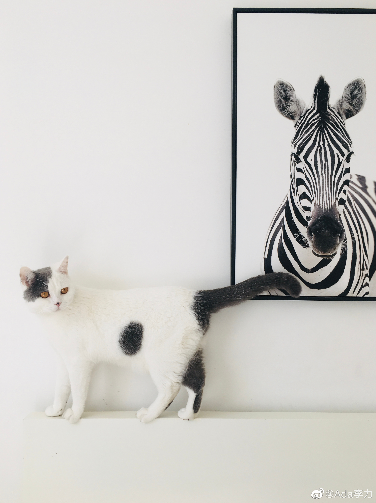

#姣姣#早上说猫弟小辉叫了一晚上，而且把我喝茶的飘逸杯也推到地上去了。
有些反常，昨晚临睡前听它叫得有些奇怪，没太在意。但这么叫一晚上还是少见，以前没这么叫过，飘逸杯放桌上很久了，它之前也没动过。我把可能原因一一列出来，再逐个排除，猜想是它渴了。食盆里果然没水，倒上水后，小辉头也不抬，闷头喝了好几分钟。等它走后，我看水盆里的水，已经少掉一半，这小家伙渴坏了。
平常它并不在食盆喝水，而是喜欢从浇花桶里，厨房里的水槽里，拖把桶，和马桶里喝水。早上我把这几个地方看了下，浇花桶是空的，拖把桶没水，马桶盖是盖着的，厨房门是关着的，它的食盆里的水也是空的……
小辉很聪明，知道飘逸杯里还有些水，于是夜里推到了地上。不过里面剩的茶水不多，估计还是没喝够。
养小辉三年了，才知道它的叫声是什么意思。人和猫之间的沟通也挺难的。
有些反常，昨晚临睡前听它叫得有些奇怪，没太在意。但这么叫一晚上还是少见，以前没这么叫过，飘逸杯放桌上很久了，它之前也没动过。我把可能原因一一列出来，再逐个排除，猜想是它渴了。食盆里果然没水，倒上水后，小辉头也不抬，闷头喝了好几分钟。等它走后，我看水盆里的水，已经少掉一半，这小家伙渴坏了。
平常它并不在食盆喝水，而是喜欢从浇花桶里，厨房里的水槽里，拖把桶，和马桶里喝水。早上我把这几个地方看了下，浇花桶是空的，拖把桶没水，马桶盖是盖着的，厨房门是关着的，它的食盆里的水也是空的……
小辉很聪明，知道飘逸杯里还有些水，于是夜里推到了地上。不过里面剩的茶水不多，估计还是没喝够。
养小辉三年了，才知道它的叫声是什么意思。人和猫之间的沟通也挺难的。
- 